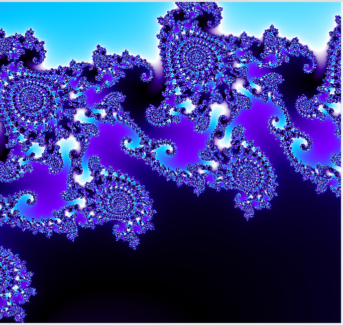

| Action | Effect |
|---|---|
| Wheel | Zooms in or out around the pointer, 1.25x per notch. The point under the pointer stays put. |
| Left drag | Pans. The old picture slides along until the new one arrives. |
| Right drag, or Shift + left drag | Draws a rectangle and zooms so that the whole rectangle is visible (the aspect ratio of the window is kept). |
| Right click | Zooms out 2x around the pointer. |
| Esc | Cancels a drag or rectangle in progress. |
A movement of three pixels or less counts as a click, not a drag. The pointer is a crosshair, or a bullseye while Pick seed from canvas is on, when a left click picks a Julia constant instead of panning.
Try it: the entrance to Seahorse Valley at zoom 40, a good place to practise the wheel
The keys act on the picture when it has the keyboard focus; click it once if they do nothing.
| Key | Effect |
|---|---|
| Arrow keys | Pan by a tenth of the window. |
| +, =, numeric +, Page Up | Zoom in 2x at the centre. |
| -, numeric -, Page Down | Zoom out 2x at the centre. |
| Home | Back to the default view of the current fractal. |
| Esc | Cancels a drag; stops a demo. |
| Item | Shortcut | Effect |
|---|---|---|
| Show side panel | Ctrl+B | Hides or shows the panel of settings. |
| Show orbit under cursor | Ctrl+O | The orbit overlay. |
| Zoom in | Ctrl++ | 2x at the centre. |
| Zoom out | Ctrl+- | 2x at the centre. |
| Reset view | Ctrl+Home | The default view of the current fractal. |
The zoom runs from 0.1 (the whole set fills a fifth of the window) to 1e300. Resizing the window keeps the centre and the zoom; the picture re-renders shortly after you stop resizing. At zoom 1 the shorter side of the window spans 3 units of the complex plane.
The leftmost field follows the pointer: it shows the complex number under it, with as many decimals as the zoom calls for (sixteen at most, then "..."). Next come the centre of the view, the zoom (with "(deep)" above 1e8, see Deep zoom), the iteration limit in use, and the state of the render: "Rendering...", "Rendered in N ms", "Saved file" or "Image copied to clipboard". While a demo flight plays, the first field shows its progress instead.